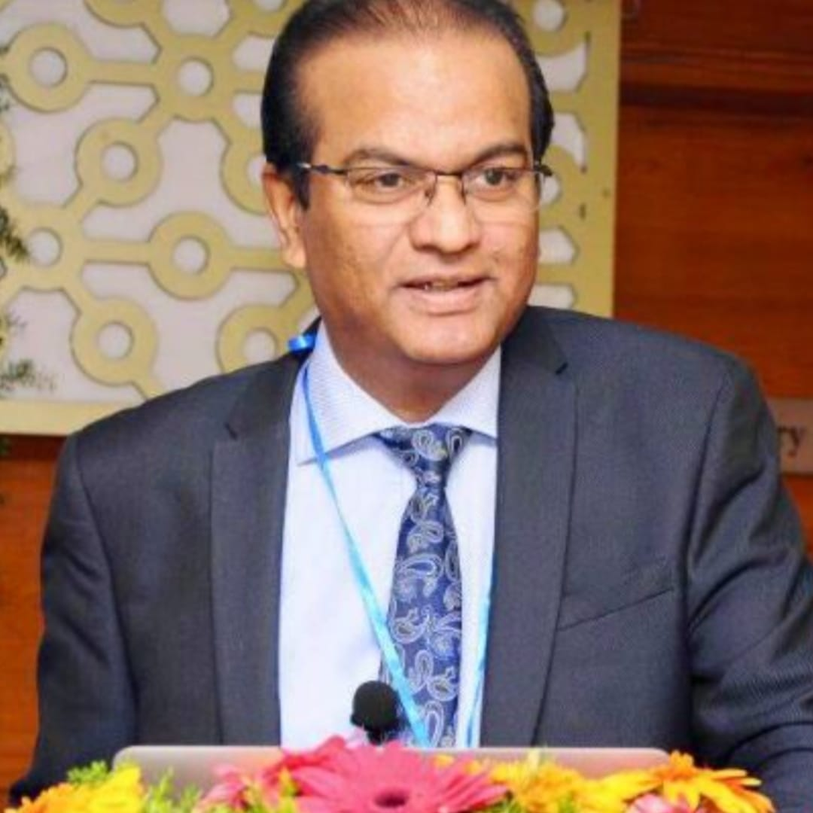
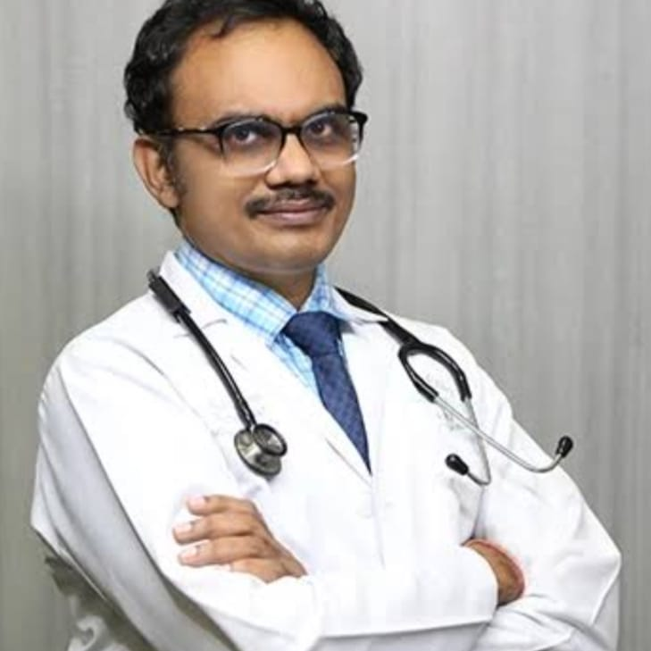
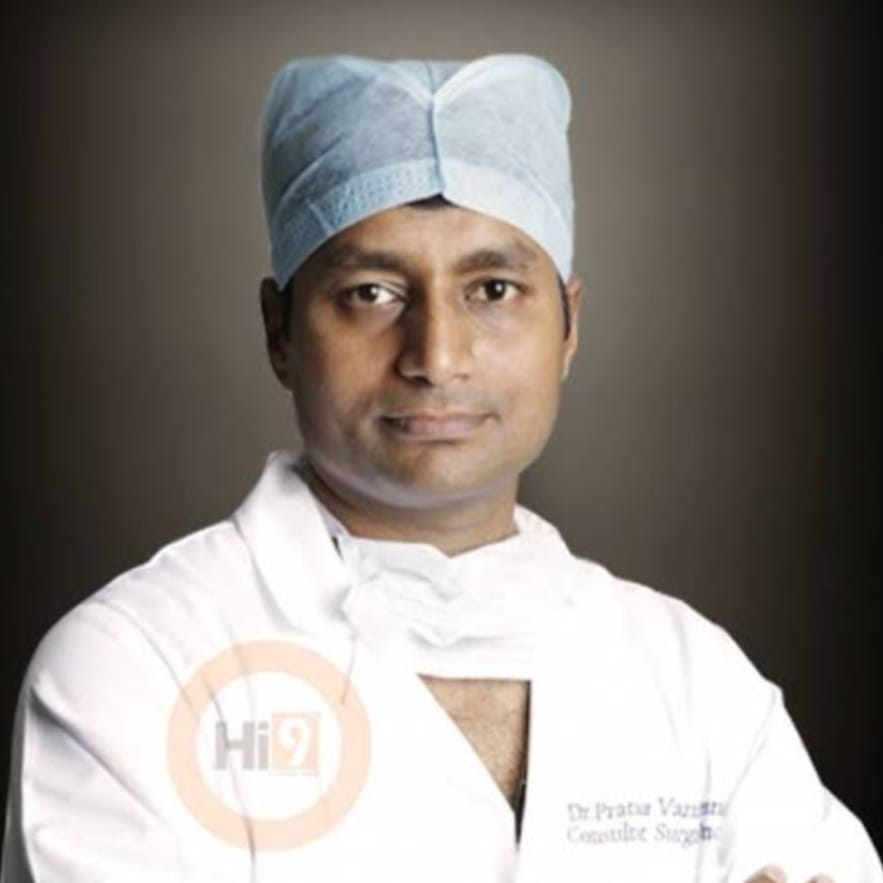
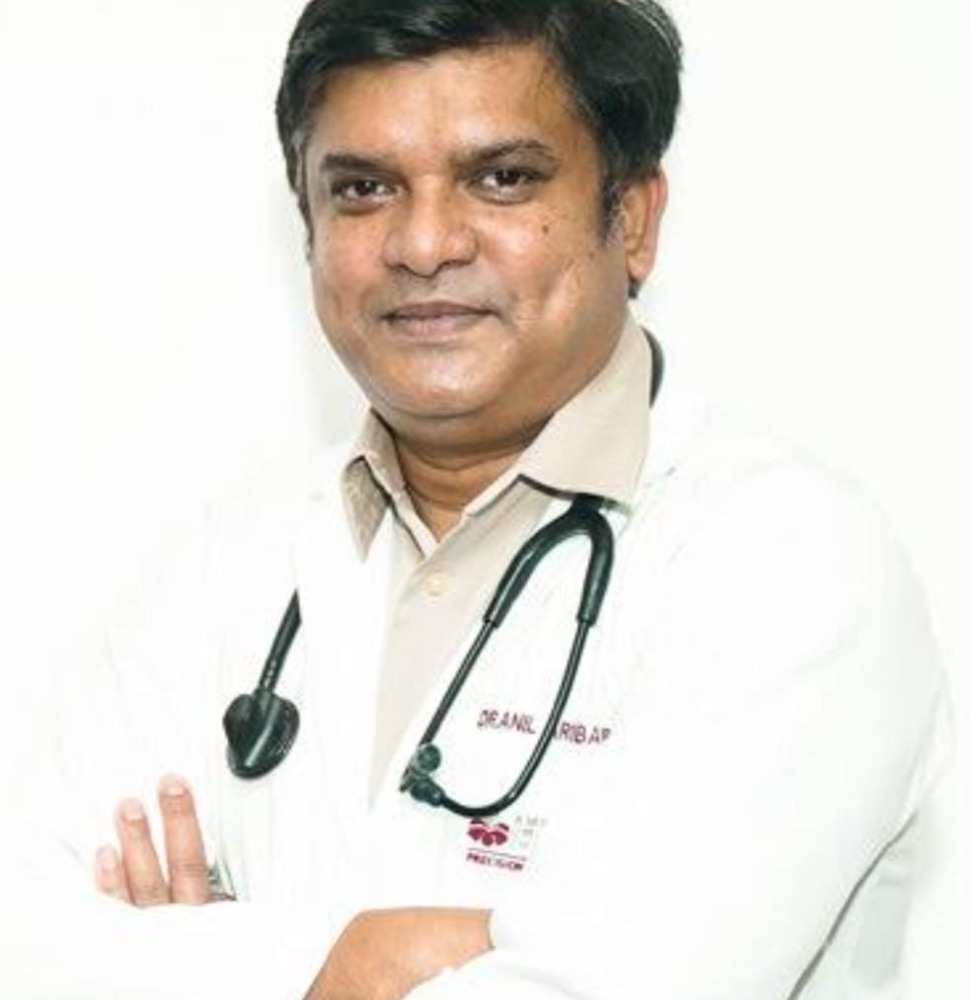
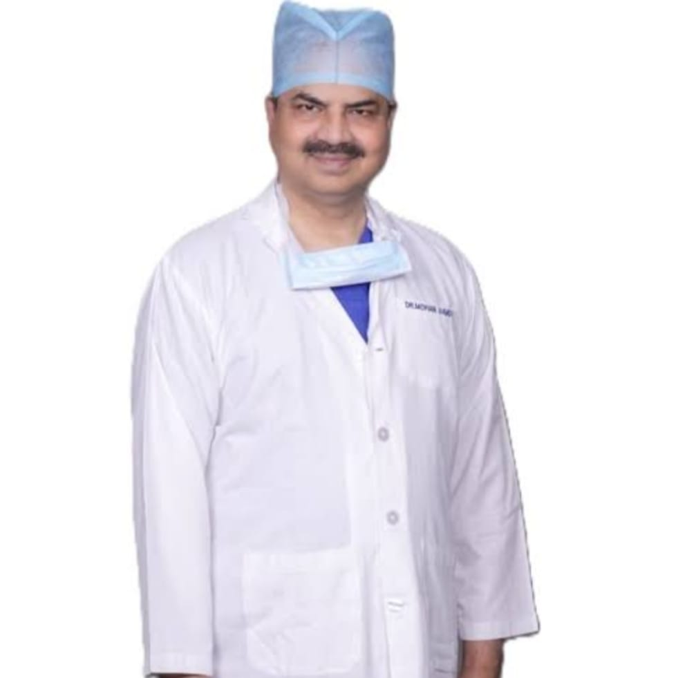

Dr. Vijay Anand Reddy – Apollo Cancer Hospital
With over 30 years of experience in oncology, Dr. Vijay Anand Reddy is one of the most prominent cancer specialists in India. As Director of Apollo Cancer Hospital, he emphasizes a multidisciplinary and personalized approach to lung cancer care. His treatments combine advanced radiation techniques like IMRT and IGRT.

Dr. AVS Suresh – Continental Hospitals
A seasoned medical oncologist with over 25 years of experience, Dr. Suresh is known for his treatment strategies. He specializes in systemic therapies like chemotherapy, immunotherapy, and targeted drugs, particularly for advanced or inoperable lung cancer.

Dr. Pratap Varma Penmetsa – CARE Outpatient Centre
A surgical oncologist with over 17 years of experience, Dr. Penmetsa is highly skilled in thoracic surgical procedures including lobectomy and pneumonectomy for lung cancer. He focuses on early-stage surgical interventions, combined with close follow-up and rehabilitation support.

Dr. Anil Kumar Aribandi – American Oncology Institute
Holding credentials such as MRCP (UK) and FRCPath, Dr. Aribandi has a rich global oncology background and over 20 years of experience. He is known for adopting international standards in diagnostics and treatment, especially for non-small cell lung cancer (NSCLC).

Dr. Mohana Vamsy CH – Omega Hospitals
Dr. Mohana Vamsy brings more than 33 years of experience in surgical oncology. He is well-known for his minimally invasive thoracic surgeries for lung cancer and has a strong focus on early detection and surgical precision.